13. Webapplicatie MVC [personne] – versie 8
Versie 8 is identiek aan versie 7, maar wordt geïmplementeerd in een WAR-archief (Web ARchive). In Eclipse klikken we met de rechtermuisknop op het project [mvc-personne-07] en kiezen we de optie [export]:
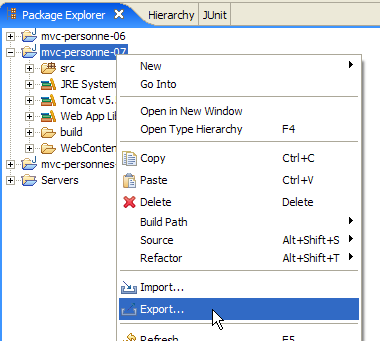 | 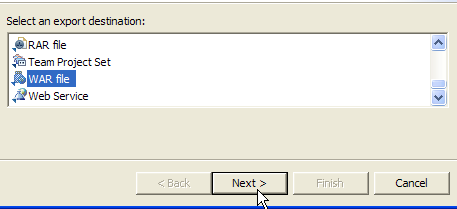 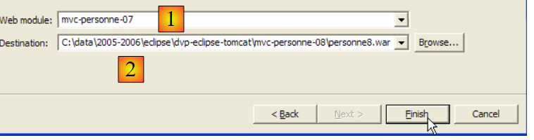 |
Kies in de vervolgkeuzelijst [1] de naam van de module die je wilt exporteren, in dit geval [mvc-personne-07], en geef met de knop [Browse] het te genereren .war-bestand aan, in dit geval [personne8.war]. Rond het proces af met de knop [Finish] en bekijk met Windows Verkenner het bestand dat is gegenereerd:
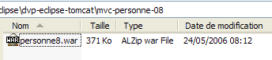
Een .war-bestand is vergelijkbaar met een .zip-bestand en kan met dezelfde tools worden uitgepakt. Laten we het uitpakken en alle elementen in de bestandsstructuur bekijken:
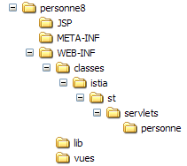 | 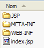 | 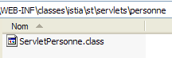 | 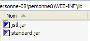 |
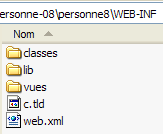 | 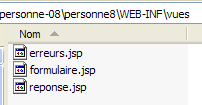 |
We kunnen vaststellen dat alle onderdelen van het project [mvc-personne-07] aanwezig zijn; de broncodes zijn vervangen door hun gecompileerde equivalenten die in [WEB-INF/classes] zijn geplaatst, zoals vereist door de implementatienorm voor servlets.
We gaan de webapplicatie [personne8.war] in Tomcat implementeren volgens de procedure die wordt beschreven in paragraaf 8.1.2, voor de implementatie van de documentatie van de bibliotheek JSTL.
We starten Tomcat via de juiste optie in het menu [Démarrer], voeren vervolgens de URL [http://localhost:8080] in en volgen de link [Tomcat Manager]:

We krijgen dan een authenticatiepagina te zien. We loggen in als manager / manager of admin / admin, zoals beschreven in paragraaf 2.3.3.

We krijgen een pagina te zien met een overzicht van de applicaties die momenteel in Tomcat zijn geïmplementeerd:
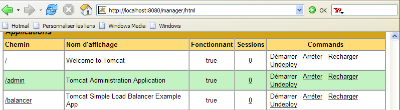
We kunnen een nieuwe applicatie toevoegen via de formulieren onderaan de pagina:

We gebruiken de knop [Parcourir] om een .war-bestand aan te wijzen dat moet worden geïmplementeerd.
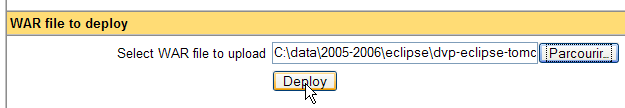
Op de schermafbeelding is het niet te zien, maar we hebben het eerder aangemaakte bestand [personne8.war] geselecteerd. Met de knop [Deploy] wordt deze applicatie opgeslagen en geïmplementeerd in Tomcat.
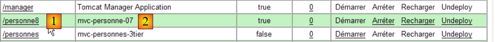
Als een bestand [XX.war] wordt geïmplementeerd, is de applicatiecontext (of de naam van de applicatie) XX. Dit wordt weergegeven door [1]. De kolom [2] toont de weergavenaam van de applicatie. Deze naam wordt in het bestand [web.xml] vastgelegd via de tag <display-name>. In de applicatie [mvc-personne-07], die is gearchiveerd in [personne8.jar], stond:
<display-name>mvc-personne-07</display-name>
De weergavenaam van de applicatie is dus [mvc-personne-07], zoals te zien is in [2].
Laten we een browser openen en de URL [http://localhost:8080/personne8] opvragen:
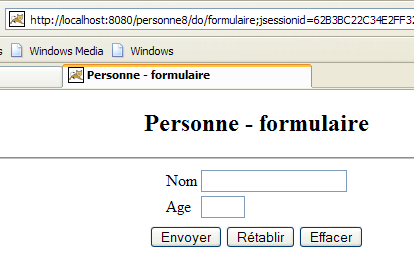
De lezer wordt uitgenodigd om verder te gaan met het testen. Het archiveren van een webapplicatie in een .war-bestand is de gebruikelijke manier om een webapplicatie te distribueren en te implementeren.